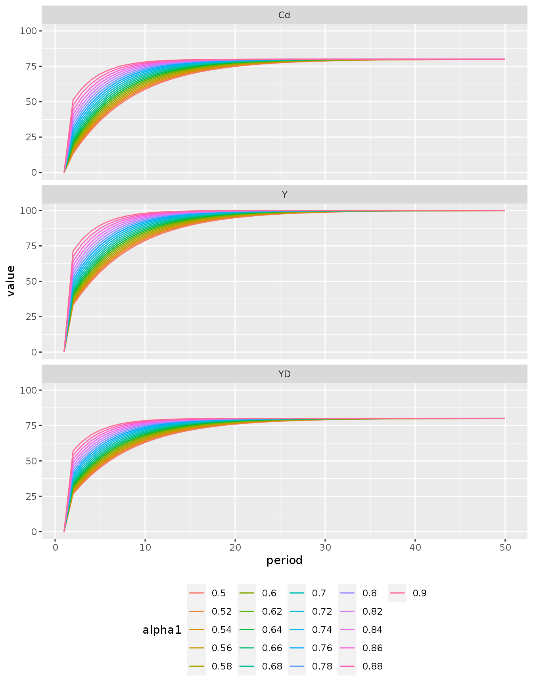

The objective of this vignette is to explore all the possibilities of simulating many similar models with the flexible sfcr_multis() function.
Load the sfcr package:
## ── Attaching packages ─────────────────────────────────────── tidyverse 1.3.0 ──## ✔ ggplot2 3.3.3 ✔ purrr 0.3.4
## ✔ tibble 3.0.4 ✔ dplyr 1.0.2
## ✔ tidyr 1.1.2 ✔ stringr 1.4.0
## ✔ readr 1.4.0 ✔ forcats 0.5.0## ── Conflicts ────────────────────────────────────────── tidyverse_conflicts() ──
## ✖ dplyr::filter() masks stats::filter()
## ✖ dplyr::lag() masks stats::lag()I’m going to use model SIM to go through this example as it is a very simple model.
As always, we start by writing down the equations and external variables:
eqs <- sfcr_set(
TXs ~ TXd,
YD ~ W * Ns - TXs,
Cd ~ alpha1 * YD + alpha2 * Hh[-1],
Hh ~ YD - Cd + Hh[-1],
Ns ~ Nd,
Nd ~ Y / W,
Cs ~ Cd,
Gs ~ Gd,
Y ~ Cs + Gs,
TXd ~ theta * W * Ns,
Hs ~ Gd - TXd + Hs[-1]
)
external <- sfcr_set(
Gd ~ 20,
W ~ 1,
alpha1 ~ 0.6,
alpha2 ~ 0.4,
theta ~ 0.2
)And simulating a baseline model:
baseline <- sfcr_baseline(eqs, external, periods = 60, hidden = c("Hh" = "Hs"))The sfcr_multis() function is a S3 generic that currently can be used in three ways:
The idea of this function is that we want to have many models that are very similar but differs in one specific way. That’s why it accept two arguments that are not in the sfcr_baseline() or sfcr_scenario() functions:
sfcr_expand() or with sfcr_multis(). It is here that we feed the models with its varying characteristics;Furthermore, the periods argument must be defined by the user. Finally, the ... argument accept any extra argument that feed the sfcr_baseline() and sfcr_scenario() functions that are called under the hood.
This option allows the user to select one variable (e.g. alpha1) and run many models that are only different in their values of that variable.
The first step is to expand the external set with the sfcr_expand() function. It has three arguments:
x_external <- sfcr_expand(external, alpha1, seq(0.5, 0.9, 0.02))We then use this variable to simulate all the models at once with sfcr_multis():
mlt_sim1 <- sfcr_multis(x_external, eqs, 50)The resulting mlt_sim1 object is a sfcr_mlt list. Every item in this list is a sfcr_tbl object that looks like the output generated by sfcr_baseline() or sfcr_scenario() but has an extra column, named as simulation, that indicates which of the simulation this item represents.
str(mlt_sim1[[1]])## tibble [50 × 18] (S3: sfcr_tbl/tbl_df/tbl/data.frame)
## $ period : int [1:50] 1 2 3 4 5 6 7 8 9 10 ...
## $ TXs : num [1:50] 1.00e-15 6.67 8.44 9.99 1.13e+01 ...
## $ YD : num [1:50] 1.00e-15 2.67e+01 3.38e+01 3.99e+01 4.53e+01 ...
## $ Cd : num [1:50] 1.00e-15 1.33e+01 2.22e+01 2.99e+01 3.66e+01 ...
## $ Hh : num [1:50] 1.00e-15 1.33e+01 2.49e+01 3.49e+01 4.36e+01 ...
## $ Ns : num [1:50] 1.00e-15 3.33e+01 4.22e+01 4.99e+01 5.66e+01 ...
## $ Nd : num [1:50] 1.00e-15 3.33e+01 4.22e+01 4.99e+01 5.66e+01 ...
## $ Cs : num [1:50] 1.00e-15 1.33e+01 2.22e+01 2.99e+01 3.66e+01 ...
## $ Gs : num [1:50] 1e-15 2e+01 2e+01 2e+01 2e+01 ...
## $ Y : num [1:50] 1.00e-15 3.33e+01 4.22e+01 4.99e+01 5.66e+01 ...
## $ TXd : num [1:50] 1.00e-15 6.67 8.44 9.99 1.13e+01 ...
## $ Hs : num [1:50] 1.00e-15 1.33e+01 2.49e+01 3.49e+01 4.36e+01 ...
## $ Gd : num [1:50] 1e-15 2e+01 2e+01 2e+01 2e+01 ...
## $ W : num [1:50] 1e-15 1e+00 1e+00 1e+00 1e+00 ...
## $ alpha2 : num [1:50] 1e-15 4e-01 4e-01 4e-01 4e-01 ...
## $ theta : num [1:50] 1e-15 2e-01 2e-01 2e-01 2e-01 ...
## $ alpha1 : num [1:50] 1e-15 5e-01 5e-01 5e-01 5e-01 ...
## $ simulation: int [1:50] 1 1 1 1 1 1 1 1 1 1 ...
## - attr(*, "matrix")= num [1:50, 1:20] 1.00e-15 6.67 8.44 9.99 1.13e+01 ...
## ..- attr(*, "dimnames")=List of 2
## .. ..$ : chr [1:50] "1" "2" "3" "4" ...
## .. ..$ : chr [1:20] "TXs" "YD" "Cd" "Hh" ...
## - attr(*, "calls")= tibble [11 × 4] (S3: tbl_df/tbl/data.frame)
## ..$ lhs : chr [1:11] "TXs" "YD" "Cd" "Hh" ...
## ..$ rhs : chr [1:11] "m[.i, 'TXd']" "m[.i,'W'] * m[.i, 'Ns'] - m[.i, 'TXs']" "m[.i,'alpha1'] * m[.i, 'YD'] + m[.i,'alpha2'] * m[.i-1,'Hh']" "m[.i, 'YD'] - m[.i, 'Cd'] + m[.i-1,'Hh']" ...
## ..$ block: Named num [1:11] 2 2 2 4 2 2 2 1 2 2 ...
## .. ..- attr(*, "names")= chr [1:11] "TXs" "YD" "Cd" "Hh" ...
## ..$ id : int [1:11] 1 2 3 4 5 6 7 8 9 10 ...
## - attr(*, "external")= chr [1:5] "Gd" "W" "alpha2" "theta" ...The idea here is to expand a sfcr_shock set to simulate many scenario models. In this example, I’m going to show how to apply different shocks to the alpha2 parameter:
shock1 <- sfcr_shock(
variables = sfcr_set(
alpha2 ~ 0.3
),
start = 5,
end = 50
)
x_shock <- sfcr_expand(shock1, alpha2, seq(0.1, 0.4, 0.05))
mlt_sim2 <- sfcr_multis(x_shock, baseline, 50)As we can see, the structure of these models are the same as before:
str(mlt_sim2[[1]])## tibble [50 × 18] (S3: sfcr_tbl/tbl_df/tbl/data.frame)
## $ period : int [1:50] 1 2 3 4 5 6 7 8 9 10 ...
## $ TXs : num [1:50] 20 20 20 20 10.8 ...
## $ YD : num [1:50] 80 80 80 80 43.1 ...
## $ Cd : num [1:50] 80 80 80 80 33.8 ...
## $ Hh : num [1:50] 80 80 80 80 89.2 ...
## $ Ns : num [1:50] 100 100 100 100 53.8 ...
## $ Nd : num [1:50] 100 100 100 100 53.8 ...
## $ Cs : num [1:50] 80 80 80 80 33.8 ...
## $ Gs : num [1:50] 20 20 20 20 20 20 20 20 20 20 ...
## $ Y : num [1:50] 100 100 100 100 53.8 ...
## $ TXd : num [1:50] 20 20 20 20 10.8 ...
## $ Hs : num [1:50] 80 80 80 80 89.2 ...
## $ Gd : num [1:50] 20 20 20 20 20 20 20 20 20 20 ...
## $ W : num [1:50] 1 1 1 1 1 1 1 1 1 1 ...
## $ alpha1 : num [1:50] 0.6 0.6 0.6 0.6 0.6 0.6 0.6 0.6 0.6 0.6 ...
## $ alpha2 : num [1:50] 0.4 0.4 0.4 0.4 0.1 0.1 0.1 0.1 0.1 0.1 ...
## $ theta : num [1:50] 0.2 0.2 0.2 0.2 0.2 0.2 0.2 0.2 0.2 0.2 ...
## $ simulation: int [1:50] 1 1 1 1 1 1 1 1 1 1 ...
## - attr(*, "matrix")= num [1:50, 1:20] 20 20 20 20 10.8 ...
## ..- attr(*, "dimnames")=List of 2
## .. ..$ : chr [1:50] "60" "60" "60" "60" ...
## .. ..$ : chr [1:20] "TXs" "YD" "Cd" "Hh" ...
## - attr(*, "calls")= tibble [11 × 4] (S3: tbl_df/tbl/data.frame)
## ..$ lhs : chr [1:11] "TXs" "YD" "Cd" "Hh" ...
## ..$ rhs : chr [1:11] "m[.i, 'TXd']" "m[.i,'W'] * m[.i, 'Ns'] - m[.i, 'TXs']" "m[.i,'alpha1'] * m[.i, 'YD'] + m[.i,'alpha2'] * m[.i-1,'Hh']" "m[.i, 'YD'] - m[.i, 'Cd'] + m[.i-1,'Hh']" ...
## ..$ block: Named num [1:11] 2 2 2 4 2 2 2 1 2 2 ...
## .. ..- attr(*, "names")= chr [1:11] "TXs" "YD" "Cd" "Hh" ...
## ..$ id : int [1:11] 1 2 3 4 5 6 7 8 9 10 ...
## - attr(*, "external")= chr [1:5] "Gd" "W" "alpha1" "alpha2" ...Finally, the last option is to apply the same shock to many baseline models, generating many scenarios. In this example, I will use the mlt_sim1 object as the expanded argument and the shock1 shock as the fixed argument:
mlt_sim3 <- sfcr_multis(mlt_sim1, fixed = shock1, periods = 50)To visualize the results, the user must combine all the models in a single tibble using the bind_rows() function from dplyr, or using rbind from base. From there, the usual strategy of reshaping the tibble into long format and plotting with ggplot2 should be applied.
Below I present a simplified example:
mlt_sim1 %>%
bind_rows() %>%
pivot_longer(cols = -c(period, simulation)) %>%
filter(name %in% c("Y", "YD", "Cd")) %>%
ggplot(aes(x = period, y = value)) +
geom_line(aes(color = as_factor(simulation))) +
facet_wrap(~name, nrow = 3) +
scale_color_hue("alpha1",
labels = as.character(seq(0.5, 0.9, 0.02))) +
theme(legend.position = "bottom") As can be seen in this example, the alpha1 parameter affects how fast the model arrives to the steady state but does not change the steady state itself.